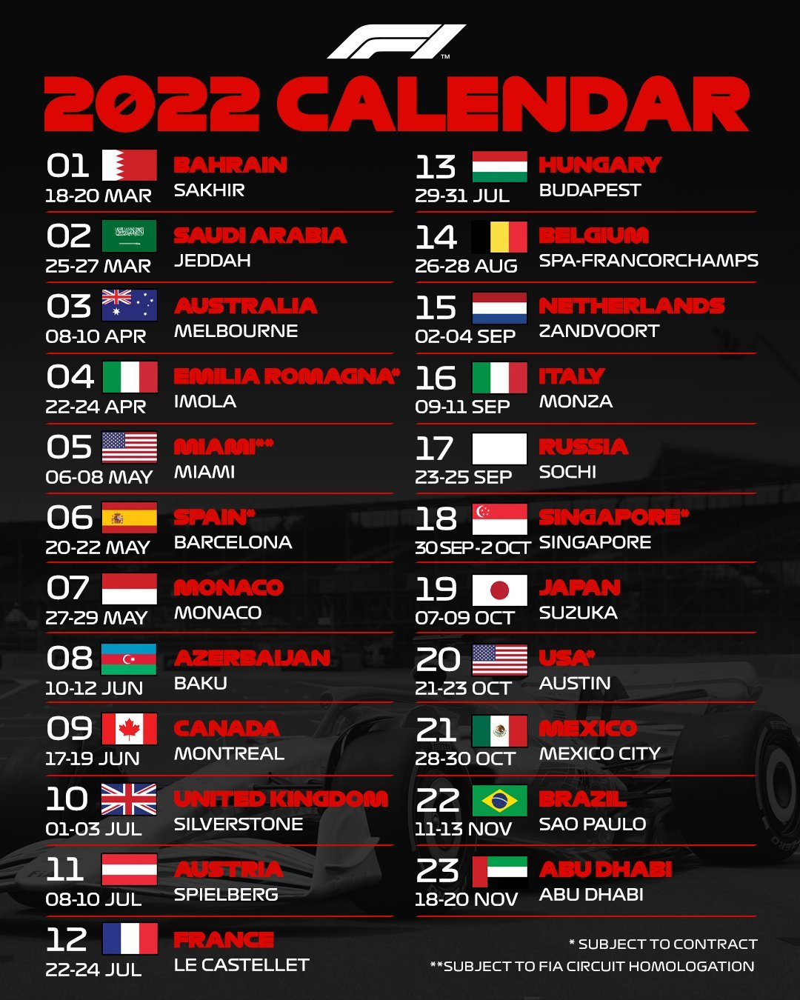

The future of F1
 Here we have next's season base car: FIA is the regulator os this sport. F1 cars have been getting bigger and bigger this past years, making quality racing go down and overtaking more and more difficult. With the new car, the dimensions have been reduced, so they are more manageable, as well as dirty air (or slipstream), making chasing and overtaking easier and fair. FIA has also introduced some changes in fuel efficiency, in a joint effort with the constructor's engineering team to drive the sport towards a more sustainable and ecofriendly future.
Here we have next's season base car: FIA is the regulator os this sport. F1 cars have been getting bigger and bigger this past years, making quality racing go down and overtaking more and more difficult. With the new car, the dimensions have been reduced, so they are more manageable, as well as dirty air (or slipstream), making chasing and overtaking easier and fair. FIA has also introduced some changes in fuel efficiency, in a joint effort with the constructor's engineering team to drive the sport towards a more sustainable and ecofriendly future.
The 2022 FIA Formula One World Championship is a planned motor racing championship for Formula One cars which will be the 73rd running of the Formula One World Championship. It is recognised by the Fédération Internationale de l'Automobile (FIA), the governing body of international motorsport, as the highest class of competition for open-wheel racing cars. The championship is due to be contested over twenty-three Grands Prix, which will be held around the world, and it is scheduled to end earlier than in other recent years to avoid overlapping with the FIFA World Cup. Drivers and teams are scheduled to compete for the titles of World Drivers' Champion and World Constructors' Champion respectively.
The 2022 championship is expected to see the introduction of significant changes to the sport's technical regulations. These changes had been intended to be introduced in 2021, but were delayed until 2022 in response to the COVID-19 pandemic.
There have been a number of high-profile changes to next season’s driver line-up, as Mercedes has changed its drivers for the first time since Nico Rosberg’s shock retirement from F1 at the end of 2016.
Lewis Hamilton remains at the team, but will be partnered with George Russell for 2022 as Mercedes saw fit to promote the British driver from Williams after an impressive three years with the Grove squad.
Valtteri Bottas will hence leave the team, moving to Alfa Romeo in place of countryman Kimi Raikkonen – who retires from F1 20 years after making his debut with the team under its previous Sauber guise.
Raikkonen’s team-mate Antonio Giovinazzi will also depart and moves to the Dragon Penske Autosport team in Formula E to partner Sergio Sette Camara.
Guanyu Zhou steps up from Formula 2 to replace Giovinazzi to become the first Chinese driver to make his full grand prix debut. He will race with the number 24.
In Russell’s place at Williams, former Red Bull driver Alexander Albon moves to the squad after a year on the sidelines, linking up with former DAMS F2 team-mate Nicholas Latifi.
Elsewhere on the grid, the line-ups remain the same, with Sergio Perez earning a contract extension with Red Bull to continue to partner Max Verstappen.
Charles Leclerc and Carlos Sainz Jr continue at Ferrari, as Lando Norris signed a long-term contract extension to remain at McLaren with Daniel Ricciardo.
Fernando Alonso triggered an option in his contract to remain with Alpine, as the team also extended Esteban Ocon’s stay at the team. Oscar Piastri will join as the team’s official reserve following his successful maiden F2 campaign.
Pierre Gasly remains at AlphaTauri alongside Yuki Tsunoda, who admitted he was surprised to be retained by the team, as Sebastian Vettel and Lance Stroll continue at Aston Martin for a second season together.
Mick Schumacher and Nikita Mazepin remain at Haas following the team’s point-less season in 2021.
You are not a F1 fan yet? We recommend you watch Netflix's Drive to Survive documentary. Here you have the trailer of the series. It is a great documentary, watch it over Christmas and get on board with F1. By the time you finish it next season will be just about to start!